Register Machines
come common fesatures about the historical algorithms
-
finite descriptions of the procedure of elementary operations (drown a person, if he dies then not witch, if not dead then witch and killed)
-
deterministic, next step is uniquely determined if there is one
- procedures may not terminate, but we can recognise when it does terminate and the result
register machines
- add 1 to the contents of a register
- test whether the contents of a register is 0
- subtract 1 form the contents of a register if it is not 0
- jumps to ("goto")
- conditionals ("if then else")
thing can go wrong if the stuff went negative
definition:
a register machine is specified by: - finite many register \(R_0, R_1, ..., R_n\) eahc capable to storing a natural numebr - a program consisting of a finite list of instruction of the form label: body where, \(\forall i = 0,1,2,...\) the (i+1)th instruction has label \(L_i\), the instruction body take the form:
\(\begin{array}{c} R^+\to L' & \text{add 1 to the contents of register R and jump to instruction label L'}\\ R^-\to L',L"&\text{if the content of R is greater than 0, the subtract one and jump to L' else jump to L"}\\ HALT & \text{stop executing instructions} \end{array}\)
for example
registers: \(R_0, R_1, R_2\)
Program: - \(L_0: R_1^- \to L_1, L_2\) - \(L_1: R^+_0 \to L_0\) - \(R_2^- \to L_3,L_4\) - \(L_3: R_0^+\to L_2\) - \(L_4: HALT\)
so this sums up \(R_1, R_2\) and put it into \(R_0\)
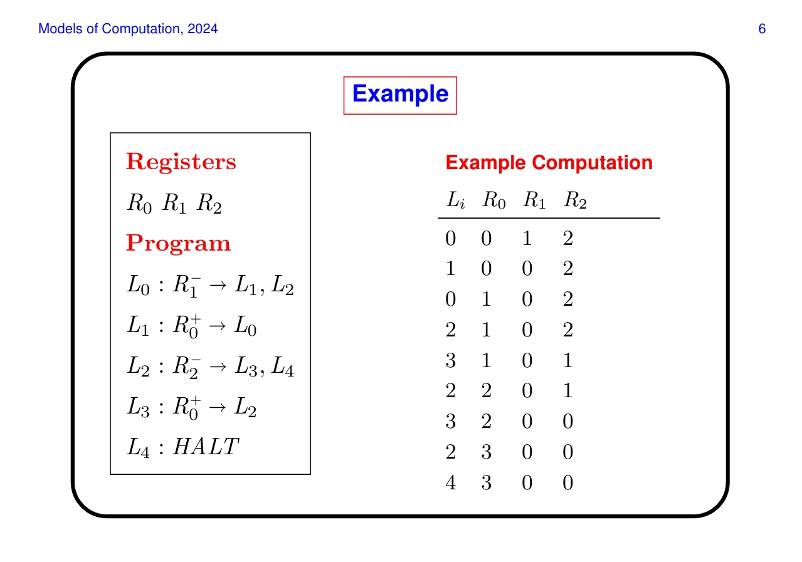
configuration:
A register machine configuration has the form
\(c = (l,r_0,...,r_n)\)
where l is the current label and \(r_i\) is the current contents of \(R_i\)
Notation \(R_i = x[\text{in configuration c}] \iff c = (l, r_0,...r_n)\) with \(r_i = x\)
Initial configurations \(c_0 = (0, r_0,...r_n)\)
Computation:
A computation of a RM is a (finite or infinte) sequence of configurations
\(c_0, c_1, c_2\)
- \(c_0 = (0, r_0,...r_n)\) is the initial configuration
- each \(c = (l, r_0...,r_n)\) in the sequence determine the next configuration in the sequence by carrying out the program instruction labelled \(L_l\) with reigsters containing \(r_0,... r_n\)
Halting Computations
for a finite computation , the last configuration \(c_m = (l, r, ...)\) is a halting configuration, so the instruction with \(L_l\) - HALT - \(R^+->L, R^-\to L, L'(R>0)\) or \(R^-\to L',L(R = 0)\) and there is no instruciton labeled L in the program
\(L_0: R^+_2 \to L_2\) and \(L_1:HALT\) halts erroneously
No Halting computations
the computation never halts(a loop)
Graphical representation
instruction is label: body, [L] denotes the register of the bosy of label L
arcs represent jumps between instrucitons
Initial instruction START
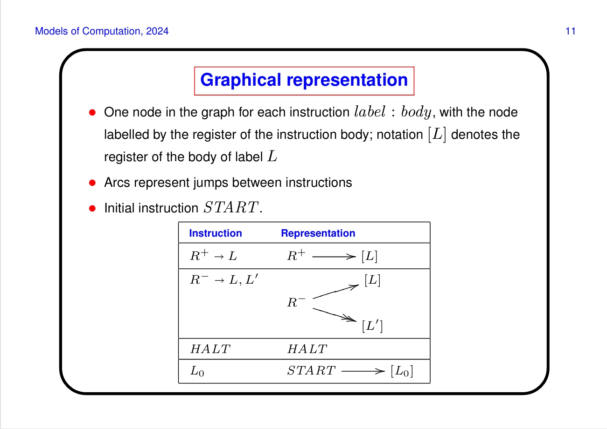
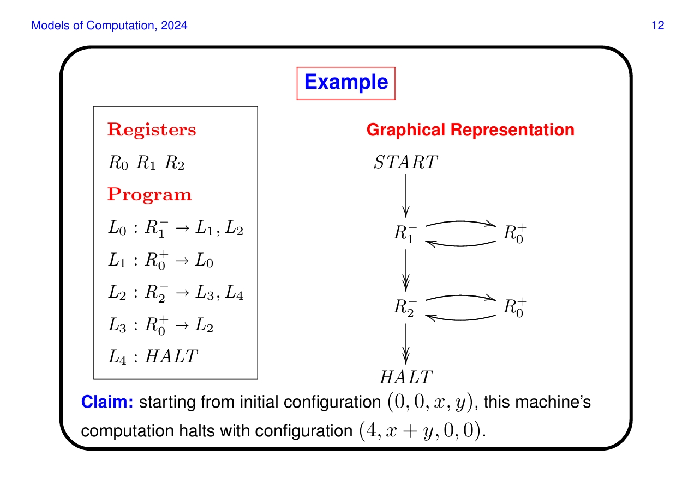
Partial functions
definition:
\((x,y)\in f\wedge (x,y')\in f \to y = y'\)
because register machine are deterministic, so the next configuration is uniquely defined by the program, so th e relation between the initial and final register contents is a partial function
- \(f(x) = y\) means \((x,y) \in f\)
- \(f(x)\downarrow\) means \(\exists y\in Y(f(x) = y)\)
- \(f(x)\uparrow\) means \(\neg\exists y\in Y(f(x) = y)\)
- \(x\rightharpoonup y\) = set of all partial functions from X to Y
- \(x\to Y\) = set of all (total) functions from X to Y
computable functions
\(f\in\mathbb{N}^n\to \mathbb{N}\) is computable if the RM has at least n+1 registers and \((x_1,...x_n)\in \mathbb{N}^n\) and all \(y\in\mathbb{N}\)
the computation of M starting with \(R_0 = 0, R_1 = x_1,...R_n = x_n\) and other registers set ot 0, halts with \(R_0 = y\) if and onyl if \(f(x_1, ...x_n) = y\)
e.g. multiplicationis computable
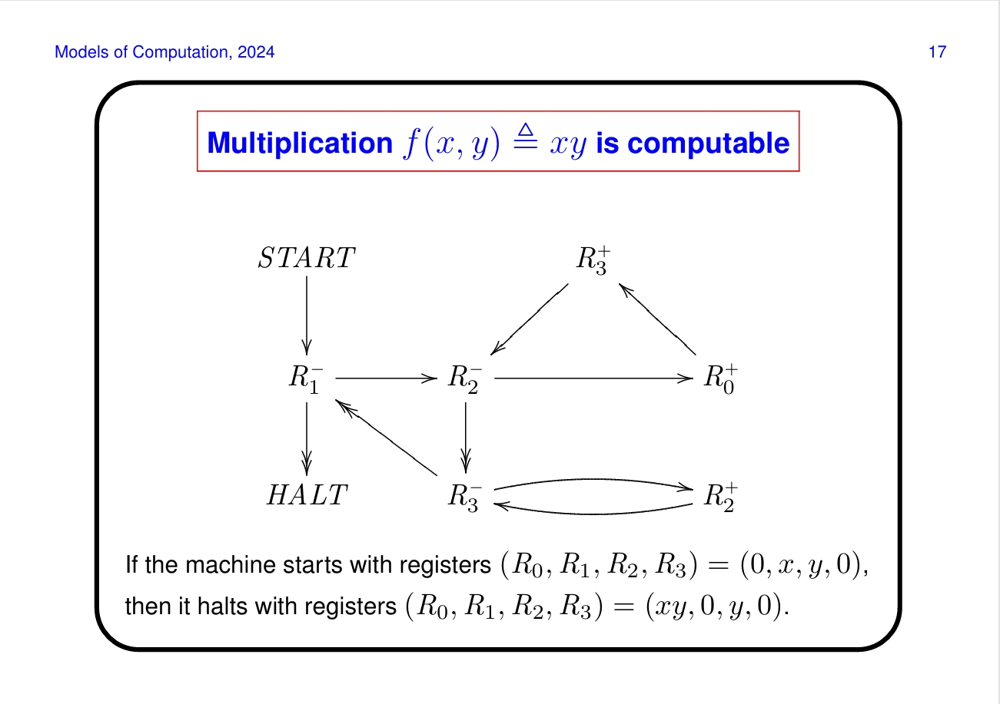
the halting problem
The halting problem is the decision problem with - the set S of the pair (A,D) where A is an algorithm and D is some input datum on which the algorithm is designed to operate - \(A(D)\downarrow\) holds for \((A,D)\in S\) if algorithm A when applied to D eventually produces a result: that is, eventually halts.
this problem is unsolvable, or no algorithm H such that
\(\forall (A,D)\in S,H(A,D) = \begin{cases}\begin{array}1 & A(D)\downarrow\\0 & \text{otherwise}\end{array}\end{cases}\)
Numerical coding of pairs
definition
For \(x,y\in\mathbb{N}\), define \(\begin{cases}《x,y》\triangleq 2^x(2y+1)\\<x,y>\triangleq 2^x(2y+1) - 1\end{cases}\)
x is the digits to shift, and y determines the front several digits
0b《x,y》 = 0by|1|0...0, x number of 0s
0b
we can prove these form bijections with natural numbers
example
27 = 0b11011 = 《0，13》 = <2,3>
result
《-，-》gives a bijection between \(\mathbb{N}\times\mathbb{N}\) and \(\mathbb{N}^+ = \{n\in\mathbb{N}|n\neq 0\}\)
<-,-> gives a bijiection between \(\mathbb{N}\times\mathbb{N}\) and \(\mathbb{N}\)
Numerical coding of lists
let List \(\mathbb{N}\) be the set of all finite lists of natural numbers, defined by:
- empty list: []
- list cons \(x::l\in List \mathbb{N}\) and \(l\in List\mathbb{N}\)
Notation:\([x_1, x_2,..., x_n]\triangleq x_1::(x_2::(...x_n::[]...))\)
For \(l\in List\mathbb{N}\) define \(^{\lceil} l^{\rceil}\in\mathbb{N}\) by induction on the length of the list
\(l:\begin{cases}^{\lceil} l^{\rceil}\triangleq 0\\^{\lceil}x::l^{\rceil}\triangleq《x,^{\lceil} l^{\rceil}》= 2^x(2\bullet ^{\lceil} l^{\rceil} + 1)\end{cases}\)
Thus, \(^{\lceil}[x_1, x_2,...,x_n] = 《x_1,《x_2,... 《x_n, 0》...》》\)
so for example
\(^{\lceil}[3]^{\rceil} = ^{\lceil}3::[]^{\rceil} = 《3,0》 = 2^3(2+0+1) = 8 = 1000_2\)
\(^{\lceil}[1,3]^{\rceil} = 《1,^{\lceil}[3]^{\rceil}》 = 《1,8》 = 34 = 100010\)
so you could see this encoding is just reversing the list, adding the element value amount of zero and add a 1 as separator
result The function \(l\to^{\lceil}l^{\rceil}\) gives a bijection from \(List\mathbb{N}\) to \(\mathbb{N}\)
Numerical coding of Programs
so it would be nicer if we encoding a program in to binary codes
if we have the program
\(\begin{array}{|c|} \hline\\ L_0:body_0\\ L_1:body_1\\ \vdots\\ L_n:body_n\\ \hline \end{array}\)
then we can encode the program by
\(^{\lceil}P {^{\rceil}}\triangleq {^{\lceil}}\quad{^{\lceil}}body_0 {^{\rceil}},..., {^{\lceil}}body_n{^{\rceil}}\quad{^{\rceil}}\)
where the numerical code \(^{\lceil}body^{\rceil}\) of an instruction body is defined:
\(\begin{cases} \begin{aligned} ^{\lceil}R_i^+\to L_j^{\rceil} &\triangleq 《2i，j》\\ ^{\lceil}R^-_i\to L_j,L_k^{\rceil} & \triangleq 《2i+1,<j,k>》\\ ^{\lceil}HALT^{\rceil} &\triangleq 0\\ \end{aligned} \end{cases}\)
so return to the example, we could do this:
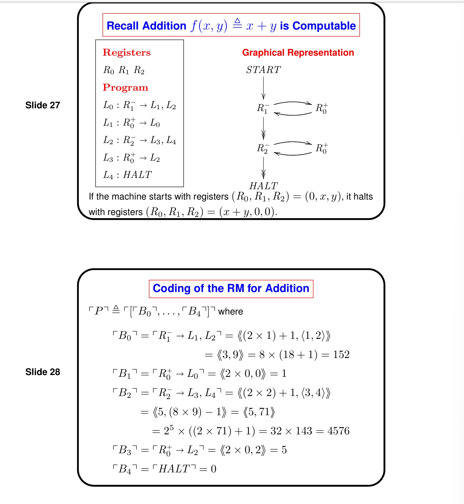
the even numbers represent minus operations, odds for plus and 0 for Halt
this list is then converted into the encoding like above
decoding is the same
Any \(x\in\mathbb{N}\) decodes to a unique instruction \(body(x)\)
if \(x = 0\to HALT\)
else let \(x = 《y,z》\)
if y = 2i is even, then \(R_i^+\to L_z\)
else y = 2i+1, let \(x = <j,k>\) in \(R_i^-\to L_j, L_k\)
for example
\(786432 = 2^{19} + 2^{18} = 0b11\underbrace{0...0}_{18"0"s}\)
\(18 = 0b10010 = 《1,4》 = 《1,<0,2>》 = {^{\lceil}}R_0^-\to L_0,L_2{^{\rceil}}\)
\(0 = ^{\lceil}HALT^{\rceil}\)
so \(prog(786432) = \begin{array}{|c|}\hline L-0:R_0^-\to L_0,L_2\\L_1:HALT\\ \hline\end{array}\)
Tutorial 1:
1.
Consider the register machine given by the following code
\(\begin{aligned} L_0 &: R_1^- \to L_1, L_7\\ L_1 &: R_0^+ \to L_2\\ L_2 &: R_2^- \to L_3, L_5\\ L_3 &: R_3^+ \to L_4\\ L_4 &: R_0^+ \to R_0^+\to L_1\\ L_5 &: R_2^+ \to L_6\\ L_6 &: R_3^- \to L_5, L_0\\ L_7 &: HALT\\ \end{aligned}\)
(a)
Given the graphical representation of the register machine
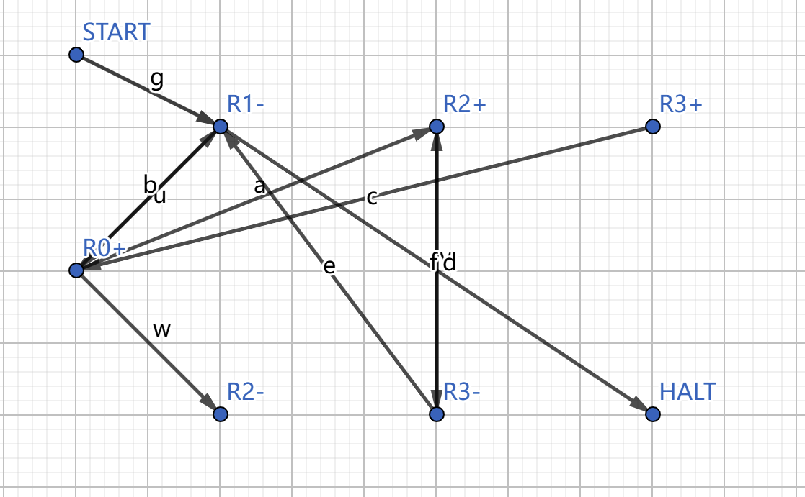
model answer:
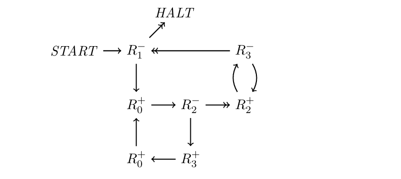
(b)
Give the computation(that is, the sequence of configurations) when the register machine is run from the initial configuration (0,0,2,0,0)
\(\begin{array}{c} L & R_0 & R_1 & R_2 & R_3\\ 0 &0& 2& 0& 0\\ 1 &0& 1& 0& 0\\ 2 &1& 1& 0& 0\\ 5 &1& 1& 0& 0\\ 6 &1& 1& 1& 0\\ 0 &1& 1& 1& 0\\ 1 &1& 0& 1& 0\\ 2 &2& 0& 1& 0\\ 3 &2& 0& 0& 0\\ 4 &2& 0& 0& 1\\ 1 &3& 0& 0& 1\\ 2 &4& 0& 0& 1\\ 5 &4& 0& 0& 1\\ 6 &4& 0& 1& 1\\ 5 &4& 0& 1& 0\\ 6 &4& 0& 2& 0\\ 0 &4& 0& 2& 0\\ 7 &4& 0& 2& 0\\ \end{array}\)
this is the same as the model answer
The register machine computer the sum of the first x odd numbers and store it in \(R_0\), x is initially stored in \(R_1\)
Register \(R_0\) is used for the accumulator and the final result, \(R_1\) is the input and used fortermination of the machine, \(R_2\) is used for the loop that calculates 2k, and R3 stores a copy of R2 whilst it is destructively used by the loop. States L1 to L4 compute 1 + 2k and copies R2 into R3 whilst R2 is decremented. L5 and L6 moves R3 back into R2 and increments the value of R2 by 1 (this is equivalent to the operation incrementing k for the next addition).
2.
(a)
initial configuration
(0,x1,x2,0,0)
\(\begin{aligned} L_0 &: R_2^-\to L_1, L_2\\ L_1 &: R_1^-\to L_0, L_4\\ L_2 &: R_1^-\to L_3, L_4\\ L_3 &: R_0^-\to L_2\\ L_4 &: HALT \end{aligned}\)
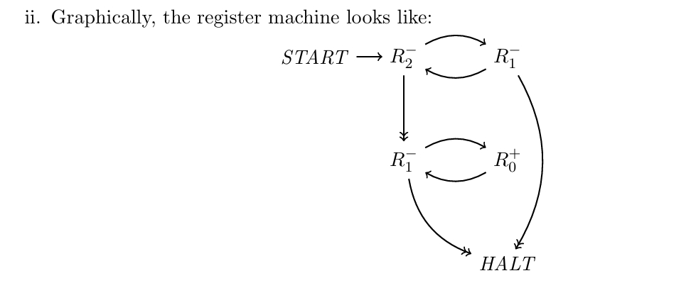
(b)
- I dont think it is computable
model answer:
recall what it means for register machine M to compute \(g(x_1,x_2)\):
The computation of M starting with \(R_0 = 0, R_1 = x_1, R_2 = x_2\) and all other registers set to 0 halts with \(R_0 = y\) if and only if \(g(x_1, x_2) = y\)
Since \(g(x_1, x_2)\) is undefine when \(x_2 > x_1\) there is no y with \(g(x_1, x_2) = y\) Therefore the machine cannot halt. Instead it must run forever
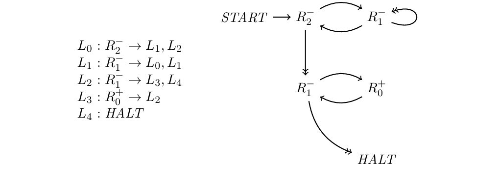
3.
(a)
\(\begin{aligned} L_0&: R_1^-\to L_1, L_3\\ L_1&: R_1^-\to L_0, L_2\\ L_2&: R_0^+\to L_3\\ L_3&: HALT \end{aligned}\)
(b)
get the remiander of x/2
4
(a)
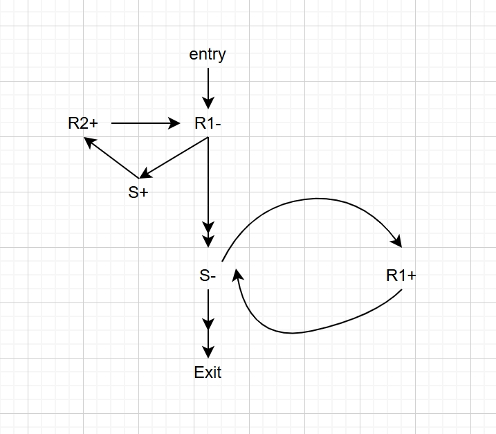
(b)
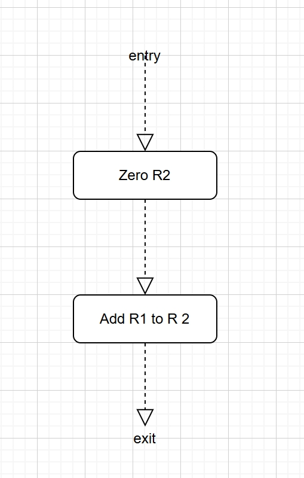
(c)
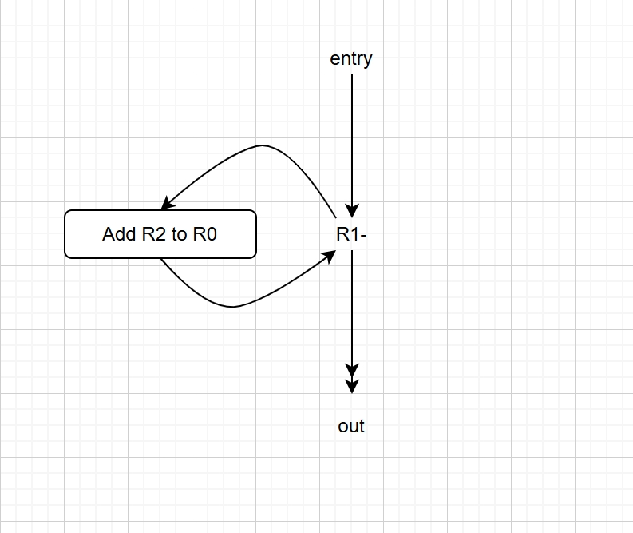
model answer:
need to zero \(R_0\) first
(d)
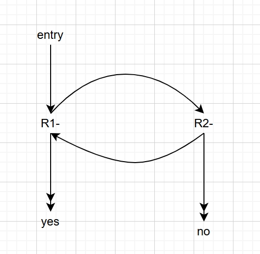
(e)
it finds the largest square number below \(R_1\)
Universal Register Machines
Gadgets:
a partial register-machine graph, has only one wire, and one or more exits
its like a function, may use other reigsters, call scratch register for temporary storage
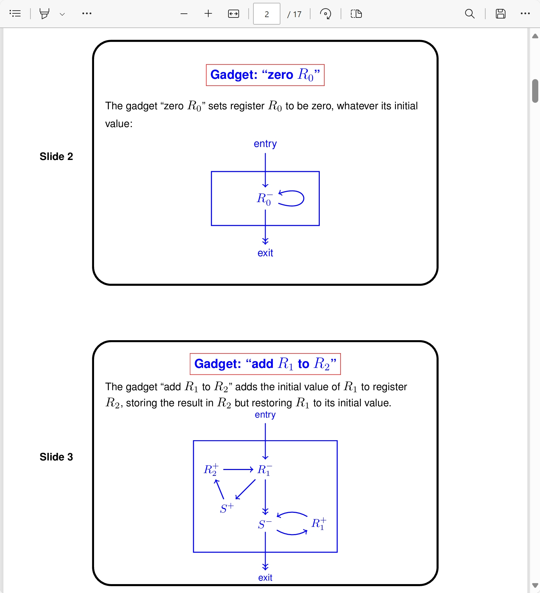
for copying, we do first zero and add other to this
so copying \(R_1\) to both \(R_2\) and \(R_3\) would be
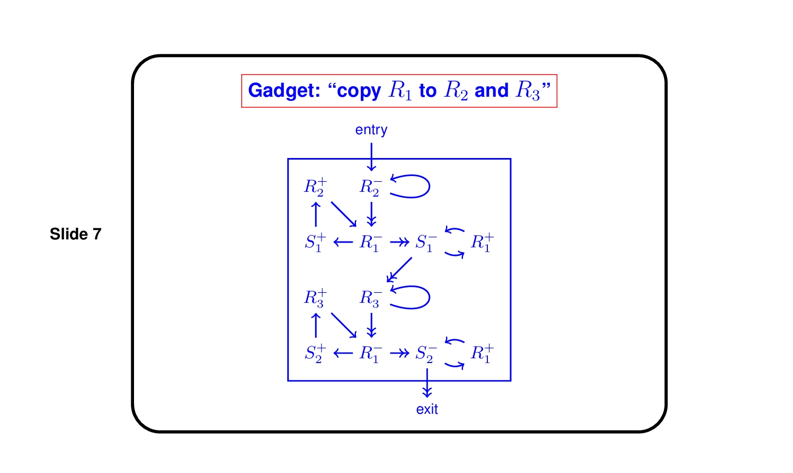
and multiplication like this:(basicallt adding multiple times)
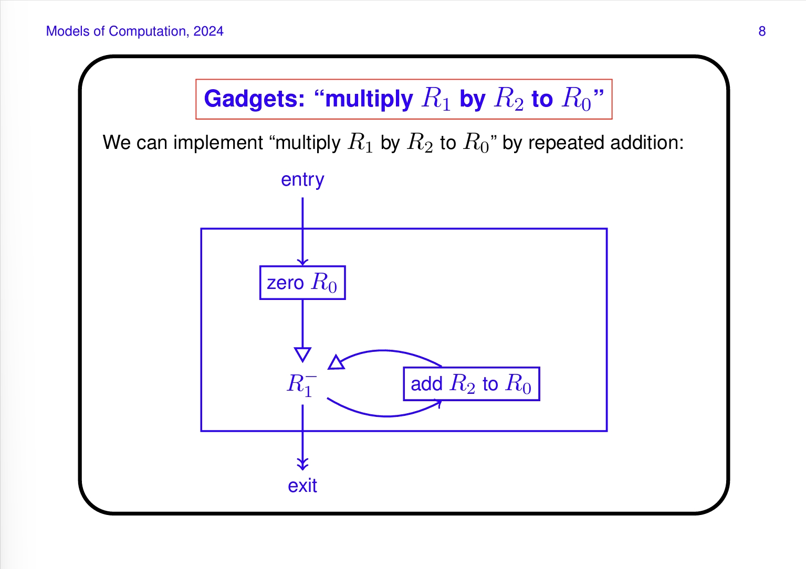
we do push X to L like this
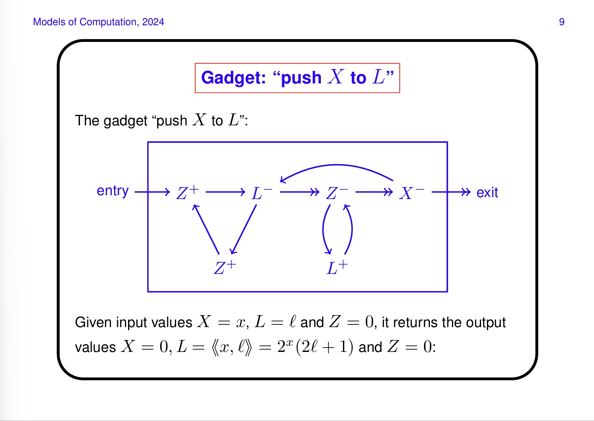
so imagine L is l, it is a list with unary zeros and 1 as delimeters
so to add the x in the front, you need to first add a 1 and the unary x
the triangle is a doubler, and we continue doubling until x is zero
consider this
\(101 -> 101001\) l = [1], x = 2, z = 0
so \((2*l + 1)2^x\)
popping does the reverse
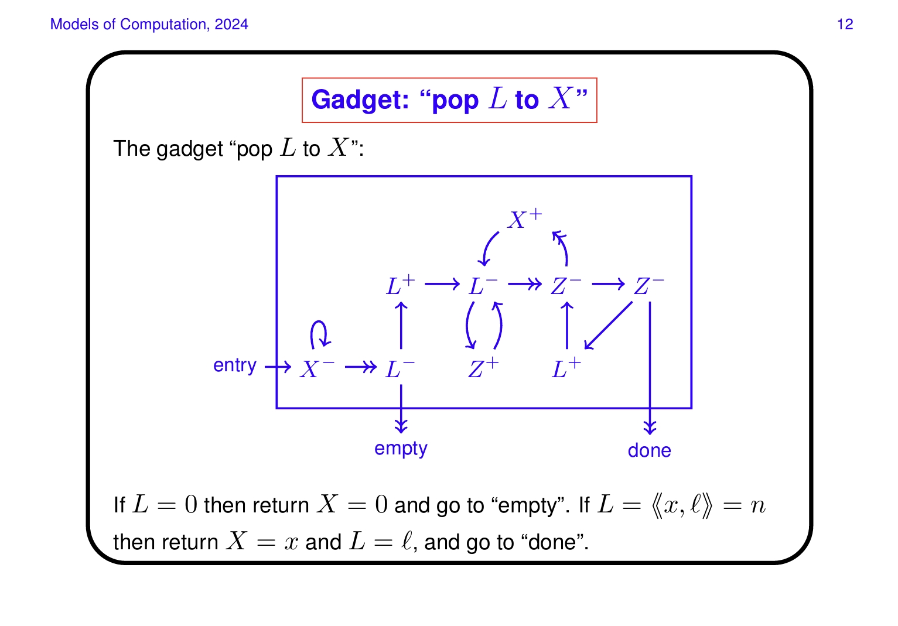
summary:
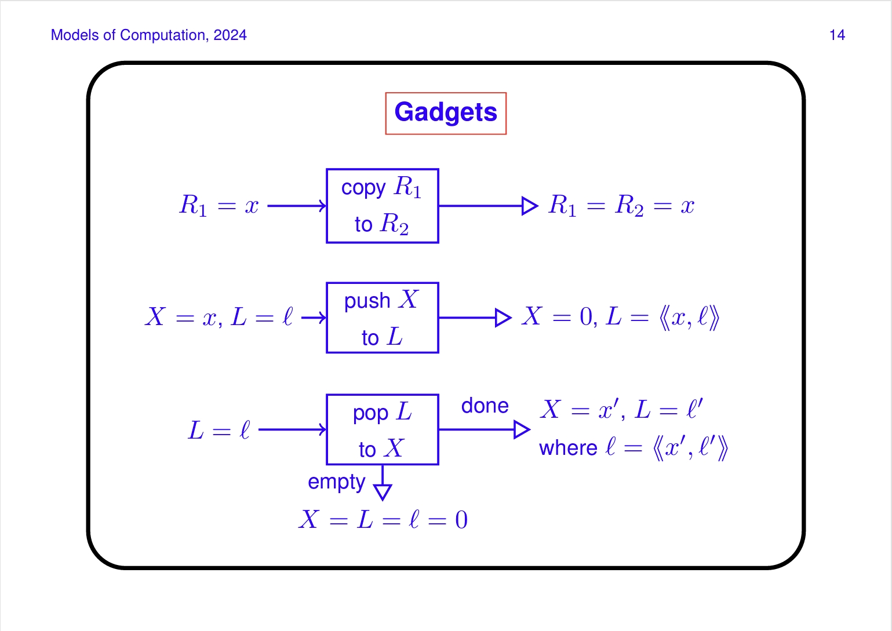
Universal Register Machine
initial condition:
\(R_0 = 0, R_1 = e(\text{code of a program}), R_2 = a(\text{code of a list of arguments})\) and other zero registers
- decode e as a RM program P
- decode a as a list of register values \(a_1, \dots, a_n\)
- carry out the computation of the RM program P starting with \(R_0 = 0, R_1 = a_1,\dots,R_n = a_n\) and any other registers occuring in P set to 0
registers:
- \(R_0\) result of the simulated RM computation(if any)
- \(R_1\mod P\) Program code of the RM to be simulated
- \(R_2\mod A\) list of RM Arguments(or register contents) of the simulated machine
- \(R_3\mod PC\) Program Counter-label number of the current instruction
- \(R_4\mod N\) label numbers of the Next instruction(s), also used to hold code of current instruction
- \(R_5\mod C\) code of Current instruction body
- \(R_6\mod R\) value of the Register to be used by current instruction
- \(R_7\mod S\) and \(R_8\mod T\) are auxiliary registers
- \(R_9\) other scratch registers
structure 1. copy PCth item of list inP to N (halting if PC > length of list) goto 2 2. if N = 0 then halt, else, decode N as 《y,z; C::=y, N::=z, goto 3 (here either C=2i and current \(R_i^+\to L_z\) or C = 2i+1 and \(R_i^-\to L_j, L_k; z = <j,k>\)) 3. copy ith item of list in A to R, goto 4 4. execute current insturction on R; update PC to the next lebel restore register values to A; goto 1
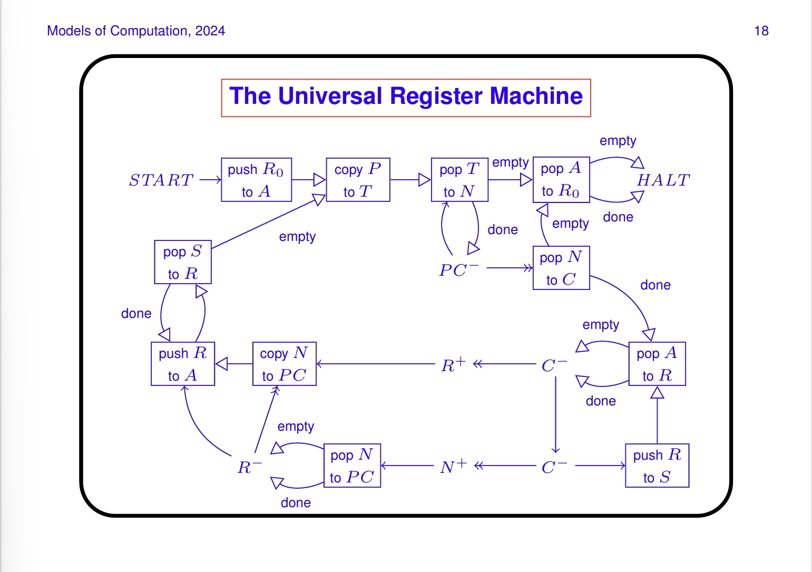
starting from start:
- push the \(R_0\) to the A list so A is the list of Registers, copy Program code to T
- pop the Program code in T, continue decrementing PC until reached the desired instruction, else, it is empty, pop A back and halt
- pop Number of labels to C, if empty pop A back and halt
- pop A into R, this should \(R_0\), C now is instruction number, so continue popping until C is zero, we reached the register we want to reach, so R is the value we are interested in, A is the registers afterwards, S is the registers before R
- if I could do even number registers, theh the instruction is \(R_i^+\to L_z\), else \(R_i^-\to L_j, L_k; z = <j,k>\), so if even, we increase R, else we increse N (《x,y》=
- if \(R^-\) success, then I store the R into A(registers to be used), else we update the Program Counter
- we clear the S by popping it into R until empty, then we start again
Halting question
Non Existence of Entities:
some object we can describe but not exist
for example: \(9^{9^9}\) or "I am telling a lie" is true or false
Halting program
A register machine H decides the Halting Problem for all \(e, a_1,\dots, a_n\in\mathbb{N}\) starting H with
\(R_0= 0, R_1=e, R_2 = {^{\lceil}}[a_1,\dots, a_n]{^{\rceil}}\)
and all the other zeroed, the computation of H always halts with \(R_0\) containing 0 or 1, and when it halts, \(R_0 = 1\) if and only if
the register machine program with index e eventually halts when started with \(R_0 = -, R_1 = a_1,\dots,R_n = a_n\) and all other register zeroed
Theorem No such register machine H can exist

so the program H' means we transfer \(R_1\) to \(R_2\)
and the program C means that the program only halts if \(R_0\) is 0, or it would be a dead cycle, so
if C with \(R_1 = c\) halts if and only if H' with \(R_1 = c\) halts with \(R_0 = 0\)
::= means that <symbol> ::= __expression__ see https://stackoverflow.com/questions/9196066/what-does-a-double-colon-followed-by-an-equals-sign-mean-in-programming-do
so the next step is decoding, the above is true if and only if
H(not H') started with \(R_1 = c\) and \(R_2 = {^{\lceil}}[c]{^{\rceil}}\) halts with \(R_0 = 0\)
by the definition of the question, this is true if and only if \(prog(c)\) started with \(R_1 = c\) does not halt
so \(C\) iwth \(R_1 = c\) does not halt
contradiction
Enumerating computable functions
For each \(e\in\mathbb{N}\) let \({\phi}_e\\in\mathbb{N}\rightharpoonup\mathbb{N}\) be the unary partial function computed by the RM with program prog(e), so forall \(x,y\in\mathbb{N}\)
\({\phi}_e(x) = y\) holds iff the computation of prog(e) started with \(R_0 = 0, R_1 = x\) and all other register zeros eventually hale with \(R_0 = y\)
then \(e\mapsto {\phi}_e\) defines a onto function from \(\mathbb{N}\) to all the computable partial function \(\mathbb{N}\to\mathbb{N}\)
uncomputable function
Let \(f\in\mathbb{N}\rightharpoonup\mathbb{N}\) be the partial function \(\{(x,0)|\phi_x(x)\uparrow\}\)
then \(f(x) = \begin{cases}\begin{array}{c}0 & (\phi_x(x)\uparrow)\\undefined & (\phi_x(x)\downarrow)\end{array}\end{cases}\)
f is not computable, because if it is, then we have some \(f = \phi_e\) for some \(e\in\mathbb{N}\)
- if \(\phi_x(x)\uparrow\) then \(f(e) = 0\) (by definition) so \(\phi_e(e) = 0\)(by definition of e) then \(\phi_e(e)\downarrow\)
- if \(\phi_x(x)\downarrow\) then \(f(w)\uparrow\) (by definition of e), so \(\phi_e(e)\uparrow\) by definition of f
contradiction anyway, so f not computable
undecidable sets of numers
Given a subset \(S\subseteq\mathbb{N}\) its charateristic function \(\mathbf{X}_{S} \in\mathbb{N}\to\mathbb{N}\)
if \(\mathbf{X}_S(x)\triangleq\begin{cases}\begin{array}{c}1 & (x\in S)\\0 & (x\notin S)\end{array}\end{cases}\)
Definition:
\(S\subseteq\mathbb{N}\) is decidable if its charateristic function is a register machine computable function. Otherwise it is called undecidable
So S is decidable iff there is a RM M with: forall \(x\in\mathbb{N}\), M started with \(R_0 = 0, R_1 = x\) and all other registers zeroed eventually halts with \(R_0\) containing 1 or 0 and \(R_0 = 1\) halting iff \(x\in S\)
so if you try to prove \(S\subseteq \mathbb{N}\) is undecidable, try to show that decidability of S would imply decidableity of the halting problem
tutorial 2
1
Consider the register machine program P given by the folowing code
\(\begin{aligned} L_0 &: R_1^-\to L_1,L_6\\ L_1 &: R_2^-\to L_2,L_4\\ L_2 &: R_0^+\to L_3\\ L_3 &: R_3^+\to L_1\\ L_4 &: R_3^-\to L_5, L_0\\ L_5 &: R_2^+\to L_4\\ L_6&: HALT\\ \end{aligned}\)
which computes the function \(f(x,y) = x\times y\), The code of P, written \({^{\lceil}}P{^{\rceil}}\) has the form \({^{\lceil}}[{^{\lceil}}B_0{^{\rceil}},{^{\lceil}}B_1{^{\rceil}},{^{\lceil}}B_2{^{\rceil}},...]{^{\rceil}}\)
Give the value of \({^{\lceil}}B_i{^{\rceil}}\) for each i
following the lecture notes
\(\begin{cases} \begin{aligned} ^{\lceil}R_i^+\to L_j^{\rceil} &\triangleq 《2i，j》\\ ^{\lceil}R^-_i\to L_j,L_k^{\rceil} & \triangleq 《2i+1,<j,k>》\\ ^{\lceil}HALT^{\rceil} &\triangleq 0\\ \end{aligned} \end{cases}\)
and
\(\begin{cases}《x,y》\triangleq 2^x(2y+1)\\<x,y>\triangleq 2^x(2y+1) - 1\end{cases}\)
\(\begin{aligned} {^{\lceil}}B_0{^{\rceil}} &= 《1， <1,6>》= 《1，25》 = 51\\ {^{\lceil}}B_1{^{\rceil}} &= 《2， <2,4>》= 《2， 35》 = 2271\\ {^{\lceil}}B_2{^{\rceil}} &= 《0，3》 = 7\\ {^{\lceil}}B_3{^{\rceil}} &= 《3，1》 = 24\\ {^{\lceil}}B_4{^{\rceil}} &= 《3，<5,0>》 = 《3，31》 = 504\\ {^{\lceil}}B_5{^{\rceil}} &= 《2，4》 = 36\\ {^{\lceil}}B_6{^{\rceil}} &= 0 \end{aligned}\)
2,
consider the natural number \(2^{216}\times 833\)
(a)
\(2^{216}\times 833 = 2^{216}\times 1101000001_2 = 1101000001\underbrace{0\dots 0}_{216}\)
so this represent the list [216,5,1,0]
which is [《3, <2,3>》, 《0,2》,《0,0》,0]
so
\(\begin{aligned} L_0&: R_3^-\to L_1, L_3\\ L_1&: R_0^+\to L_2\\ L_2&: R_0^+\to L_0\\ L_3&: HALT \end{aligned}\)
b:
it doubles the value of \(R_3\) to \(R_0\) while clearing \(R_3\)
3.
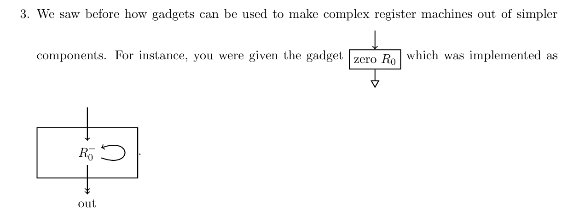
a.
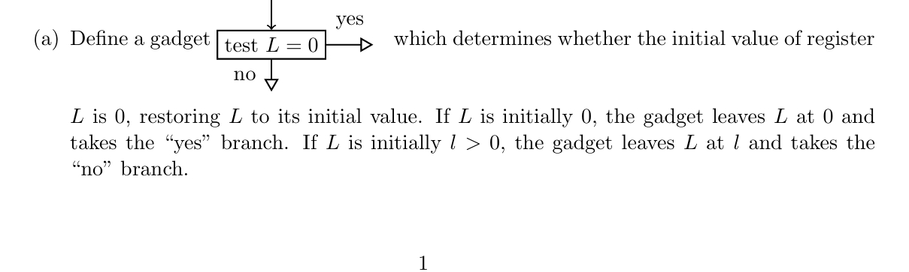
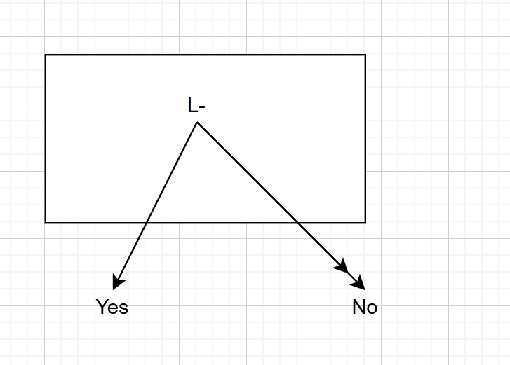
bcdef
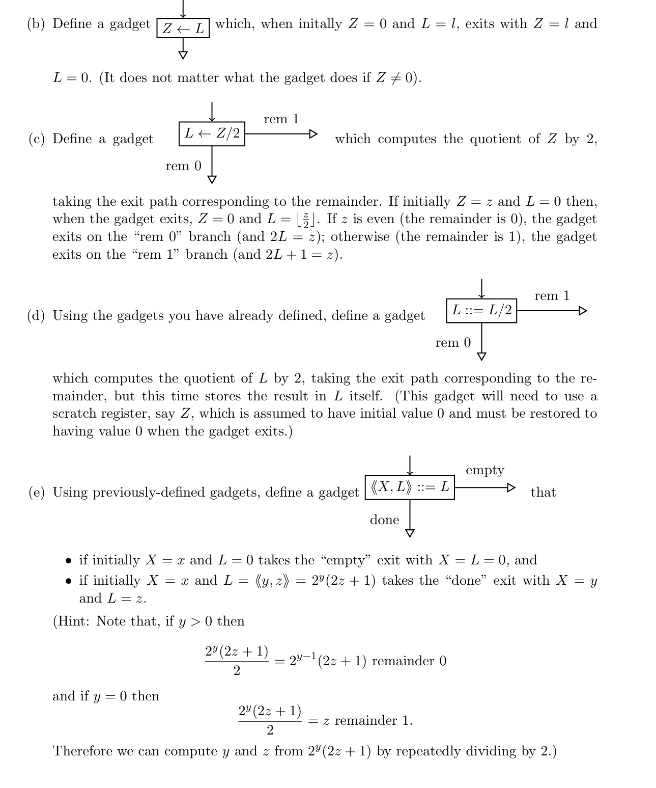
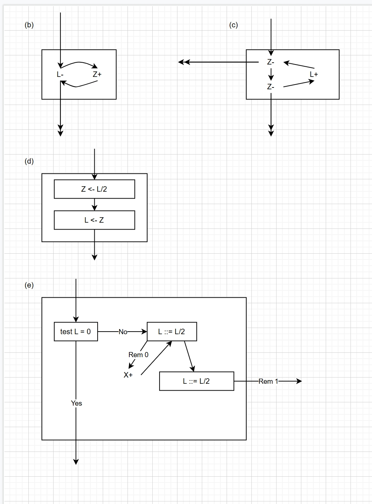
Lecture3 turning machines
algorithms, informally:
- its a finite description of the procedure in terms of elementary operations
- deterministic
- procedure may not terminate
turning machines
the machine starts with state s and every step it overwrites the current position on the tape or move left or right or change state
A Turning machine is sepcified by a quadruple \(M = (Q, \sum, s, \delta)\) where
- Q is a finist set of machine states
- \(\sum\) is a finite set of tape symbols, containing distinguished symbol \(\textvisiblespace\) called blank
- an initial state \(s\in Q\)
- a partial transition function \(\delta\in(Q\times\sum)\rightharpoonup (Q\times\sum\times\{L,R\})\)
L,R stand for left and right
configuration
A turning machine configuration (q,w,u) consist of
- the current state \(q\in Q\)
- a finite possibly-empty string \(w\in\sum^*\) of tape symbold to the left of the tape head
- a fintie possibly empty string \(u\in\sum^*\) of tape symbols under and to the right of tape head. \(\epsilon\) denotes the empty string
An initial configruation is \((s,\epsilon,u)\), for initial state s and string tape symbols u
functions
we have the two functions \(\text{first}:\sum^*\to\sum\times\sum^*\) and \(\text{last}:\sum^*\to\sum\times\sum^*\) as follows
\(\begin{aligned} \text{first(w)} &= \begin{cases}\begin{array} (a,v) &\text{if }w = av\\ (\textvisiblespace,\epsilon)&\text{if }w =\epsilon\\ \end{array}\end{cases}\\ \text{first(w)} &= \begin{cases}\begin{array} (a,v) &\text{if }w = va\\ (\textvisiblespace,\epsilon)&\text{if }w =\epsilon\\ \end{array}\end{cases} \end{aligned}\)
Turning machine Computation
Given \(M = (Q, \sum, s, \delta)\), define \((q,w,u)\to_M(q',w',u')\) by
\(\text{first}(u) = (a,\u')\\ \frac{\delta(q,a)=(q',a',L)\qquad\text{last(w) = (b,w')}}{(q,w,u)\to_M(q',w',ba'u')}\\ \frac{\text{first}(u)=(a,u')\qquad\delta(q,a)=(q',a',R)}{(q,w,u)\to_M(q',wa',u')}\)
We say a configuration \((q,w,n)\) is anormal form if it has no computation step,this is when \(\delta(q,a)\) is undefined for \(\text{first}(u) = (a,u')\)
a computation of a TM M is a (finite or infinite) sequence of configruations, \(c_0,c_1,c_2\dots\) where - \(c_0=(s,\epsilon,u)\) is an initial configuration - \(c_i\to_M c_{i+1}\) holds for each \(i = 0,1,\dots\)
The computation
- does not halt if the sequence is infinite
- halts if the sequence is finite and its last element \((q,w,u)\) is a normal form
Graphical representation of a turning machine
the graph representing a TM
- Nodes: states \(q\in Q\)
- Edges: representing the transition function For \(((q,s),(q',s',M))\in\delta\) with \(q,q'\in Q, s,s'\in\sum\) and \(M\in\{L,R\}\) there is a link from q to q' labelled by \(s\to s',M\) and
- initial state: \(s\in Q\) indicated e.g. by an unlabeled edge
Theorm
The computation of a Turning machine M can be implemented by a register machine
(a register machine is at least as powerufl as a turning maching)
step1:
fix a numerical encoding of \(M\)'s state,, tape symbols, tape contents and configurations
Identify the state and tape symbol with numbers:
\(Q =\{0,1,\dots,n\}\qquad\sum=\{0,1,\dots,m\}\)
where s = 0 and \(\textvisiblespace = 0\)
Code configurations \(c = (q,w,u)\) with three numbers
- q the state number
- \({^{\lceil}}[a_i,\dots,a_1]{^{\rceil}}\) where \(q = a_1,\dots,a_i\)
- \({^{\lceil}}[b_i,\dots,b_1]{^{\rceil}}\) where \(q = b_1,\dots,b_i\)
this reversla make it easier for RM programs
define directions \(L = 0, R = 1\)
step2:
we can turn the finite table of (argument, result) pairs specifying \(\delta\) into a RM gadget

which does the following, q,a,d are the initial values of registers I, A, D
- updates the registers to I=q', A = a', D = d' and takes the defined exit if \(\delta(q,a) = (q',a',d')\)
- leaves the registers inteact and the undefined exit if \(\delta(q,a)\) is undefined
step3:
for a TM M, it uses registers
- I = current state
- W = code of tape symbold left of tape head
- U = code ofo tape symbols at and right of the tape head
starting with U containing the code of the input string, the RM program halts if and only if M halts; we can use the following UNiversal Register machine to achieve the same effect of a Turing machine

tape encoding of lists of numbers
A tape of \(\{\textvisiblespace, 0, 1\}\) codes a list of numbers if precisely two cell contain 0 and the only cells containing 1 between these
\(\underbrace{\dots\textvisiblespace\textvisiblespace}_{all\textvisiblespace s}0\underbrace{1/dots1}_{n_1}\textvisiblespace\underbrace{1/dots1}_{n_2}\textvisiblespace\dots\underbrace{1/dots1}_{n_k}\textvisiblespace0\underbrace{\textvisiblespace\textvisiblespace\dots}_{all\textvisiblespace s}\)
Lecutre 4 \(\lambda\) calculus
it is in the following form
\(M\quad::=\quad \underbrace{x}_{\text{Variable}}|\underbrace{\lambdax.M}_{\text{Abstraction}}|\underbrace{M M}_{\text{Application}}\)
the Abstraction is a single-parameter function
just recall the lambda x: 2*x + 1 in python
or \(x => 2*x + 1\) in javascript
syntax:
free and bound variables
consider these three
- \(\lambda x.x\) In this case x is bounded
- \(\lambda x.y\) In this case y is free
- \(\lambda x.\lambda y.\lambda z xy\) We call this a closed term as there are no free variables